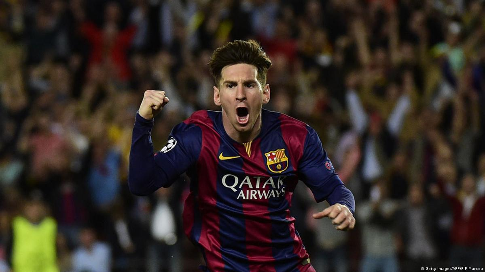

Lionel Messi, in full Lionel Andrés Messi, also called Leo Messi, (born June 24, 1987, Rosario, Argentina),
Argentine-born football (soccer) player who received a
record-setting seven Ballon d’Or awards as the world’s top male player (2009–12, 2015, 2019, and 2021).
In 2022 he helped Argentina win the Fédération Internationale de Football Association (FIFA)’s World Cup.
In the 2004–05 season Messi, then 17,
became the youngest official player and goal scorer
in the Spanish La Liga (the country’s highest division of football). Though only 5 feet 7 inches (1.7 metres) tall
and weighing 148 pounds (67 kg), he was strong, well-balanced, and versatile on the field. Naturally left-footed, quick,
and precise in control of the ball, Messi was a keen pass distributor and could readily thread his way through packed defenses. In 2005 he was granted Spanish citizenship, an honour greeted with mixed feelings by the fiercely Catalan supporters of Barcelona.
The next year Messi and Barcelona won the Champions League (the European club championship) title.

Messi helped Barcelona capture another treble during the 2014–15 season,
leading the team with 43 goals scored over the course of the campaign, which resulted in his fifth world player
of the year honour. He scored 41 goals across all competitions for Barcelona in 2015–16, and the club won the La Liga title
and the Copa del Rey during that season. Messi topped that with 53 goals for Barcelona in 2016–17, leading the team to another Copa
del Rey title. In 2017–18 he scored 45 goals, and Barcelona won the La Liga–Copa del Rey double once again. Messi scored 51 goals
across all domestic competitions in 2018–19 as Barcelona won another La Liga championship. In late 2019 he won his sixth career
Ballon d’Or and was named FIFA’s best male player of the year. In the 2020–21 season, Barcelona claimed the Copa del Rey title,
the seventh of Messi’s career. He became a free agent in 2021, and financial issues—some of which were the result of La Liga rules—largely prevented him from re-signing with Barcelona. He left the club having set a number of records; notably, he was the leading goal scorer in the league’s history (474). Later in 2021 Messi signed with Paris St.-Germain, where he joined superstars Kylian Mbappé and Neymar
, and that year he also received another Ballon d’Or.